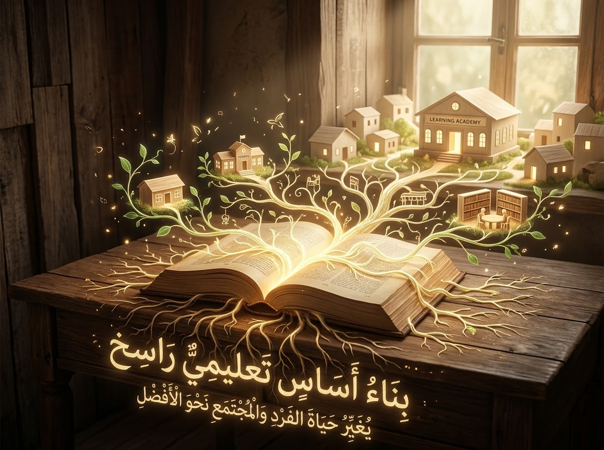
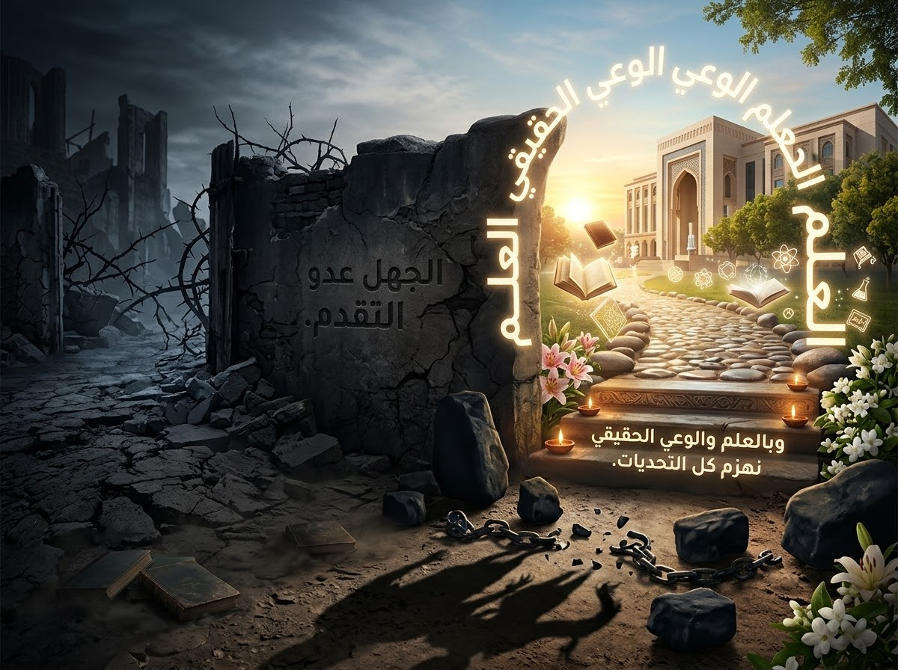
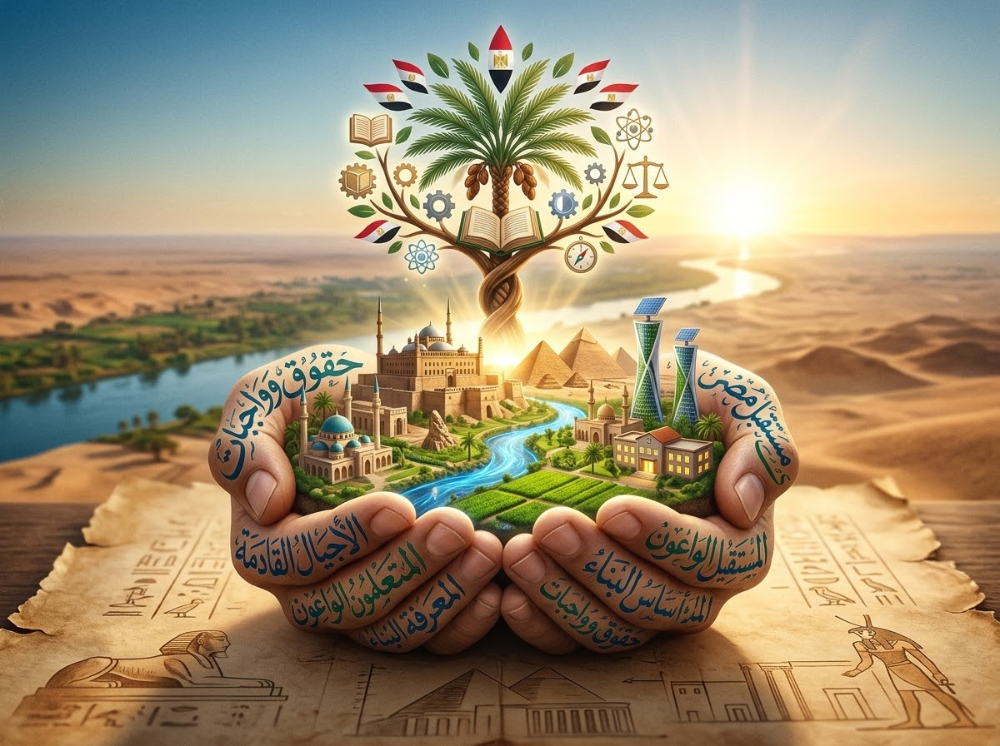
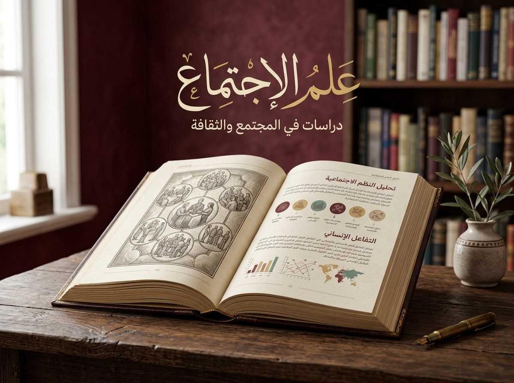
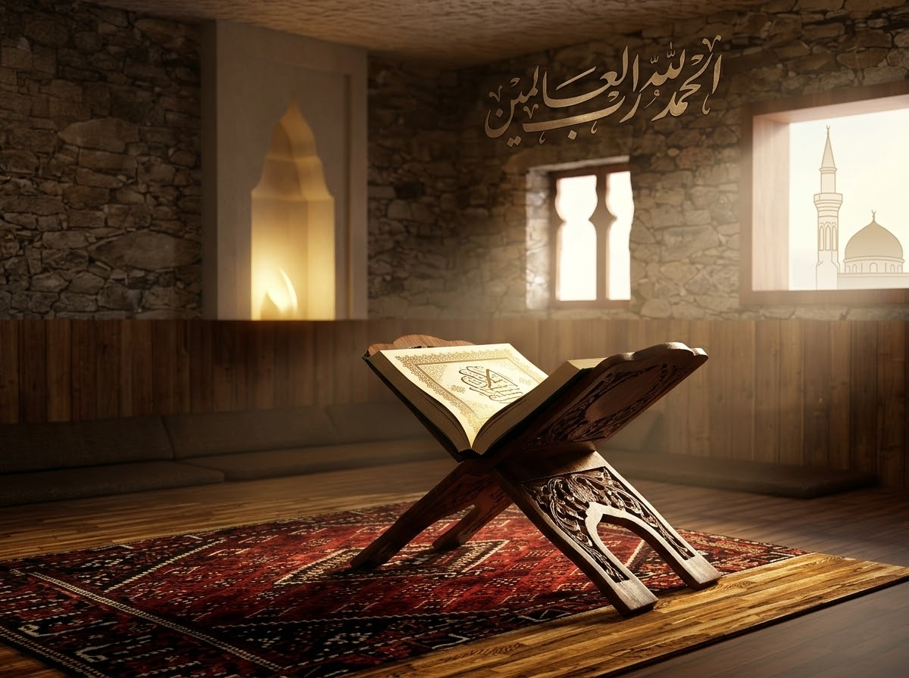

منصة القبة التعليمية
علمٌ يثبت، وعقلٌ يستنير، ومستقبلٌ يُبنى
مؤسس المنصة: المهندس محمد عصام
علمٌ يثبت، وعقلٌ يستنير، ومستقبلٌ يُبنى

نسعى لبناء أساس تعليمي راسخ يغير حياة الفرد والمجتمع نحو الأفضل.

الجهل عدو التقدم، وبالعلم والوعي الحقيقي نهزم كل التحديات.

مستقبل مصر في يد أبنائها المتعلمين الواعين بحقوقهم وواجباتهم.
خطوتك الأولى لامتلاك مفاتيح اللغة العربية والمعرفة الأساسية.
تصفح المسارفهم عالم الإنترنت والتكنولوجيا للتعامل مع متطلبات العصر الحديث.
تصفح المسار
فهم العلاقات الإنسانية وبناء شخصية مجتمعية واعية ومنتجة.
تصفح المسار
قصص إسلامية، وقضايا فكرية لترسيخ الهوية والقيم الراقية.
تصفح المسار